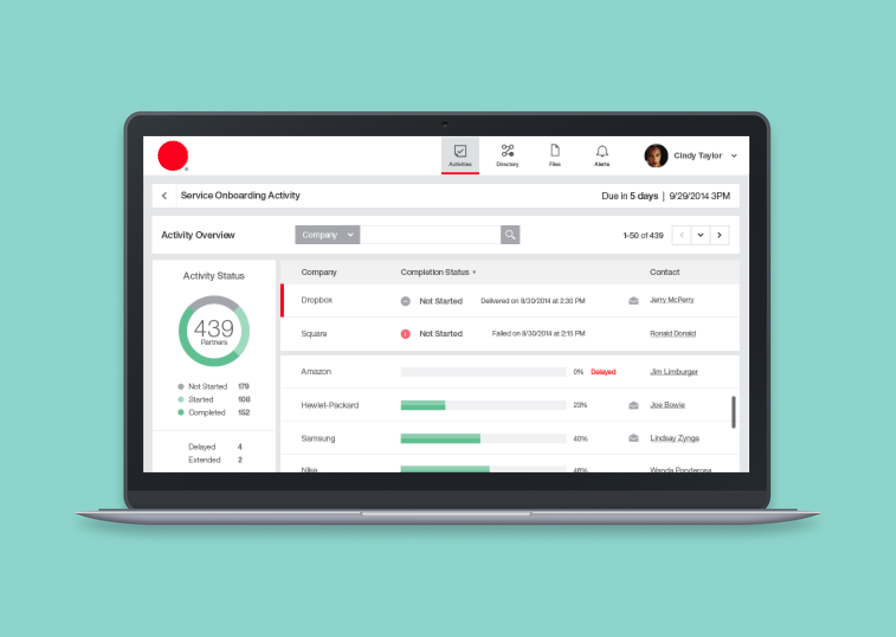

Partner Engagement Manager
IBM, 2013Constrained by a drag and drop experience, I led a team to reshape the idea of creating and tracking campaigns to cut process time and mitigate risk.

The Problem
In today's B2B landscape, communication is the key to building relationships. There are a variety of protocols and transaction types to ease this communication. Alongside there are evolving technologies and expanding security and compliance requirements.
In 2014, I led the design of the IBM Partner Engagement Manager. My role was to research, plan, and define the new experience. I worked with product management, engineers, and a small team of designers.
Business Objective
In the beginning, the Product, Design, Engineering teams understand the vision. We discussed several business ideas and requirements from the user. The group decided to: 'Remove barriers by driving collaborative relationships. We want to help organizations track trading partner engagements.'
Success Metric
To ensure the success of the product, I created metrics that the team would follow.

Context
Our target audience revolved around trading partners and line-of-business (LOB) representatives. I met several people to discuss their roles, motivations, problems, and process improvements.
I learned that LOB reps need to be aware of their client's situation. They want to ensure they're happy before a new campaign, like test driving a new car. Trading partners need to be aware of any tasks they're assigned. They don't like spending too much time on each task and feel unproductive when working.
I placed each member in a persona template to ensure a user-focused product. I passed them to the rest of the team and made changes according to other insights and opinions.

Discovery
Onboarding corporate banking clients to financial applications and services are time-consuming. It's inefficient and requires many touchpoints. Adding new services can result in significant revenue and poor customer experiences.
On average, it takes 25 days to onboard a new client with approximately 1,500 new client setups per month. One user mentioned 38 touchpoints, 60 extra services, and millions of ongoing interactions. I started to ask the questions:
I presented the activity builder and dashboard to solve these issues. We knew many other problems would appear, but we felt these would solve the majority of problems. In turn, we would receive more influence from the executive team.

Ideation
At first, the solutions did not go well. They brought up concerns and wanted more features. After several discussions, the product management and engineering teams agreed with the assessment. They conceded the experience was extensive to win the support of the executives and users.
The dashboard will introduce clarity around users' current campaigns, tasks, and trading partners. We wanted to help them reload their progress from their last job in hopes they would finish.
The activity designer will help them create any campaign or process. The feature needed to scale because campaigns can consist of many steps and users to do the task.

With the team, I began sketching, wireframing and prototyping a new experience. We met daily to show progress and concentrated our efforts on a single workflow. To prove our assumptions, we measured the completion time, start time, and self-sufficiency. For a small 5-step campaign, the average completion time was ~10 minutes with a 78% self-completion rate. Meanwhile, 88% of users could leave, return, and identify their last task. At the start it took them 25 days to onboard a person and the new experience reduced it to five days.

Delivery
With our initial test complete, I took the results and integrated them into the next sprint. Over the next couple of months, I continued to iterate and test the experience with our users and team. The most notable problem revolved around creating campaigns. To complete the experience, they required split tasks and rich text formatting.
Impact
While we had a large backlog, we had a flow of confidence. Users could create activities, return to work, and sustain relationships with trading partners. Communication is hard, but our solutions seemed to align with our user's outcomes.
With positivity from both users and the executive, we released in Q1 2015. For my efforts, I received the IBM Excellence & Eminence Award.